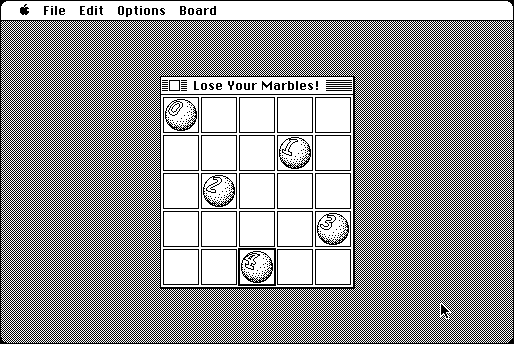

Download
lose-your-marbles-10.zip (90K) Lose Your Marbles! 1.0 repackaged into a zipped hfs disk image and checksum file. The disk image can be mounted with Mini vMac.
lose-your-marbles-10.hqx (127K) Lose Your Marbles! 1.0 in the original format.
copyright: Mark Pilgrim
mod date: Jul 13, 1994
license: GPL
last known url
(gone)
"The object is to fill the board with marbles such that no row, column, or diagonal has two of the same marble", using "as few different marbles as possible". for "System 4.1 or later". Source code is available.

Download source code ("contains the complete THINK C 7 project and resource files")
lose-your-marbles-10-c.zip (143K) Lose Your Marbles! 1.0 Source repackaged into a zipped hfs disk image and checksum file. The disk image can be mounted with Mini vMac.
lose-your-marbles-10-c.hqx (254K) Lose Your Marbles! 1.0 Source in the original format.
If you find these downloads useful, please consider helping the Gryphel Project, which hosts them.
Here are the md5 checksums for the downloads, signed with Gryphel Key 5:
--------- GRY SIGNED TEXT --------- 4c0e0bf30ba3a30edf3751ab91cc826f lose-your-marbles-10.zip fc6f004561627baa7662fcb9de2184e2 lose-your-marbles-10.hqx efb2121e718b12f4436d833304419871 lose-your-marbles-10-c.zip 5e3d24737675df25c952f2c5c3b0798e lose-your-marbles-10-c.hqx ------- BEGIN GRY SIGNATURE ------- Gry/4Xa8CFcUzxdN/D53HtmjdZiV++iqCjl4GY6PDy12VhsJlK6Rx255pvS4Bxpz jpEcS6gOW/4YJP4cYi/TAZoyRW3ABMhP6iRWD+RcevpoDIBxHotKyIZho5geCOBv /K8f5t6oNfka+9RRIuSmcsy5NQEVZPLmhUxBLa5zl+kZsWWe/KeWq8ObNHceJySv -------- END GRY SIGNATURE --------